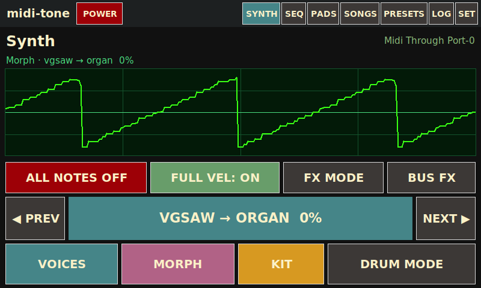
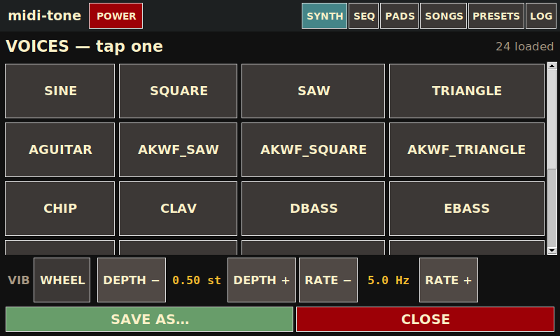
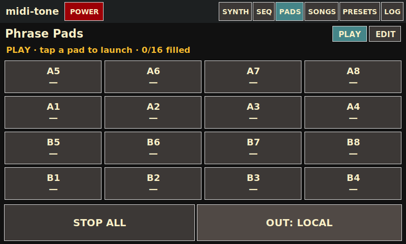
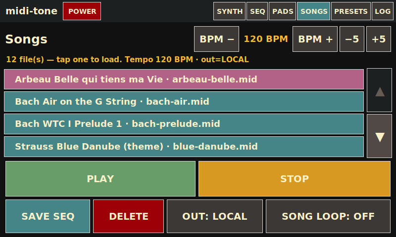
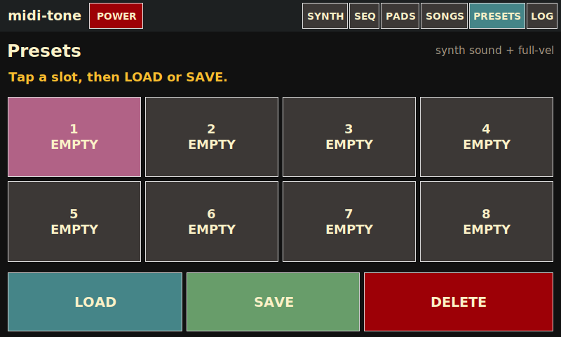
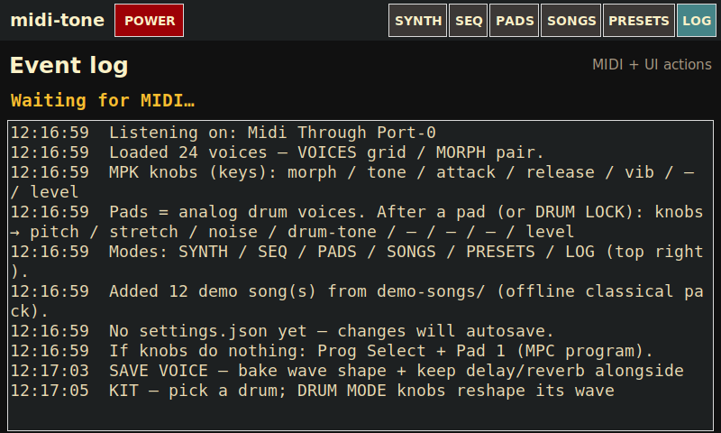
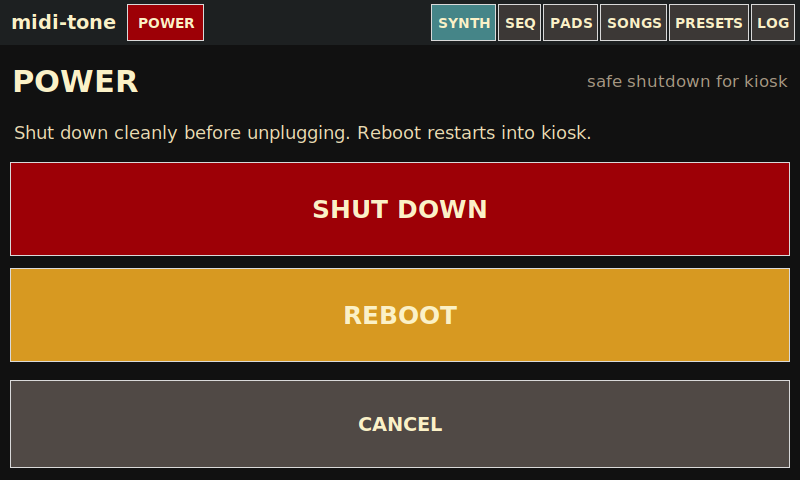

Global chrome
Always visible on every primary mode.
| midi-tone | App title (not a button). |
|---|---|
| POWER | Opens the kiosk-safe shutdown and reboot screen. |
| SYNTH | Wavetable morph synth, CRT scope, voice / morph / kit / drum & FX controls. |
| SEQ | Free-timing overdub sequencer for layered drum and keyboard takes. |
| PADS | 16 phrase pads with separate EDIT and PLAY views. |
| SONGS | Plays Standard MIDI Files locally and/or through USB→DIN, with tempo and loop controls. |
| PRESETS | Eight slots for saving and loading synth settings, session preferences, and full-velocity state. |
| LOG | Scrolling MIDI and UI event history with clear and panic controls. |
SYNTH
Main performance surface: morphing wavetable voice, CRT scope, and transport / mode buttons.

| CRT scope | Live picture of the current morph wavetable (tiled to three periods). Updates when morph / voice changes. |
|---|---|
| Morph caption | Shows endpoints and blend, e.g. Morph · sine → square 0%. |
| Status lines | Show the last MIDI or UI event, active notes, and a summary that follows the current knob mode. |
| ALL NOTES OFF | Panic — silence all sounding notes immediately. |
| FULL VEL | Toggle: force velocity 127 on note-ons (easier on a light touch), or use real velocity. |
| FX MODE | Remaps MPK knobs to the current insert FX target (per-voice or per-drum). Highlighted when on. |
| BUS FX | Remaps knobs to the global mix-bus FX (wet on the whole soft-synth mix). |
| ◀ PREV / NEXT ▶ | Step morph-A voice and park morph at pure A. The center label shows the current pair and blend; tap it to open VOICES. |
| VOICES | Opens the full voice grid and on-screen vibrato controls. |
| MORPH | Opens the morph-pair editor for choosing endpoints A and B. |
| KIT | Opens the drum explorer to select, audition, reshape, or target a drum with insert FX. |
| DRUM MODE | Remaps knobs 1–4 to drum pitch, tone, stretch, and noise. Knob 8 remains the master output level. |
VOICES overlay
Opened from SYNTH → VOICES or by tapping the center voice label.

| Voice tiles | Pick morph-A and park the blend at pure A. The grid contains the built-in shapes and loaded wavetable files. |
|---|---|
| WHEEL / ON | Choose whether vibrato follows the modulation joystick or remains on without wheel input. |
| DEPTH − / + | Adjust vibrato depth from 0–2 semitones. |
| RATE − / + | Adjust vibrato rate from 1–9 Hz. |
| SAVE AS… | Opens SAVE VOICE to bake the current morph, drive, and tone into a named user wavetable. |
| CLOSE | Return to SYNTH. |
SAVE VOICE (SAVE AS…)
Opened by SAVE AS… on either VOICES or MORPH.

| Name field / keyboard | Enter a safe filename with the touch keyboard. Names are normalized to lowercase letters, numbers, and underscores (up to 24 characters). |
|---|---|
| SUGGEST | Restore the generated name based on the current morph endpoints and blend. |
| ⌫ / CLR | Delete the last character or clear the entire name. |
| 123 / ABC | Switch between the letter and number keyboard layouts. |
| SAVE | Write user-wavetables/<name>.wav with morph, drive, and tone baked into the cycle, plus a small .fx.json sidecar for delay and reverb. |
| CANCEL | Dismiss without writing a voice and return to SYNTH. |
Built-in voices cannot be overwritten. Selecting a saved user voice restores its delay and reverb sidecar.
MORPH overlay
Opened from SYNTH → MORPH to choose the two voices that Knob 1 blends between.

| A / B | Arm the endpoint assigned by the next voice-grid tap. Choosing A automatically arms B for the next selection. |
|---|---|
| Voice grid | Assign the armed endpoint to a loaded wavetable. |
| SWAP | Exchange A and B while inverting the current blend so the sound stays unchanged. |
| SAVE AS… | Opens SAVE VOICE for the current morph timbre. |
| DONE | Keep the edited pair and return to SYNTH. |
| CANCEL | Restore the pair and blend from before the overlay opened, then return to SYNTH. |
Opening MORPH turns DRUM MODE, FX MODE, and BUS FX off so Knob 1 controls the blend.
KIT overlay
Opened from SYNTH → KIT to explore the 16 procedural drum voices.

| Pad / model tiles | Select and audition a drum voice. With FX MODE on, the tile also targets that drum’s insert FX. |
|---|---|
| Wave preview | Shows the selected one-shot. Drum-mode pitch, tone, stretch, and noise controls reshape it. |
| ALL DRUMS | Turn on FX MODE and target the shared kit-group bus, so one drive, delay, or reverb affects the complete kit without wetting the synth voice. |
| AUDITION | Play the selected drum again. |
| CLOSE | Return to SYNTH. |
When no FX mode is active, opening KIT enables DRUM MODE so the hardware knobs reshape the selected one-shot.
SEQ (Sequencer)
Free-timing overdub looper: record a backbone length, then stack layers of keys and drums.

| REC BACKBONE / OVERDUB | First press starts recording the backbone; press again to lock loop length and begin playback. Later REC starts an overdub take. |
|---|---|
| PLAY / ■ STOP | Start or stop sequencer playback (needs a backbone). |
| KEEP | Commit the pending overdub layer into the stack. |
| DROP | Discard the pending overdub take. |
| UNDO | Peel off the last committed layer. |
| LEN ×2 / LEN ÷2 | Double or half the loop length (within limits / existing layer constraints). |
| OVERDUB: WRAP / EXTEND | WRAP loops within the current length; EXTEND can grow the cycle while overdubbing. |
| STOP ALL | Stop recording and playback. |
| CLEAR | Wipe the sequence. |
| ALL NOTES OFF | Panic. |
PADS — EDIT
Build and fine-tune the 16 phrase pads (record into empty pads, set trigger / voice / channel).

| PLAY / EDIT | PLAY opens the streamlined performance view. EDIT allows recording into empty pads and shows detail controls. |
|---|---|
| Pad grid A1–B8 | Empty pad: tap to arm record. Filled pad: launch / select for editing. |
| STOP REC | Finish an in-progress pad recording. |
| MODE | Arm mode, then tap a pad to toggle that pad between one-shot and loop playback. |
| CLEAR | Arm clear, then tap a pad to erase it. |
| STOP ALL | Stop all playing phrases. |
| OUT | Cycle phrase output: LOCAL / USB / BOTH (shares song USB port). |
| TRIG | Per-selected-pad: one-shot vs loop trigger. |
| FOLLOW / LOCK | Use the live global morph and level, or lock the current voice snapshot and level to this pad. |
| CH | Force MIDI out channel or keep recorded channel. |
| SYNTH / MIDI | Enable the local soft-synth, or mute it for MIDI-only output. |
| VIB | Switch between the vibrato captured with the phrase and the live synth settings. |
| VOL− / VOL+ | Trim this pad from 10–200% in 10% steps. |
PADS — PLAY
Performance grid: launch and stop clips without arming record.

| PLAY / EDIT | EDIT returns to the recording and pad-detail view. |
|---|---|
| Pad grid | Tap filled pads to launch / toggle. Empty pads only select (no record in PLAY). |
| STOP ALL | Stop every playing phrase. |
| OUT | LOCAL / USB / BOTH routing for phrase MIDI. |
SONGS
Browse songs/ MIDI files, set tempo, play locally and/or to USB MIDI out.

| BPM − / + / −5 / +5 | Nudge playback tempo relative to the file. |
|---|---|
| Song list + ▲ / ▼ | Tap a .mid row to select it; page with the chunky ▲ / ▼ buttons. |
| PLAY / STOP | Start or stop song playback. |
| DELETE | Remove the selected file from songs/. |
| OUT | LOCAL / USB / BOTH — soft-synth and/or hardware DIN via USB MIDI adapter. |
| SONG LOOP | Repeat the file when it ends. |
| SAVE SEQ | Export the current SEQ arrangement into songs/ as a MIDI file. |
Any bundled demo songs missing from songs/ are copied there when the app launches.
PRESETS
Eight quick slots for the current synth sound and full-velocity preference.

| Slots 1–8 | Tap to select. Shows name or EMPTY. |
|---|---|
| LOAD | Recall the selected slot into the live synth. |
| SAVE | Store the current synth patch into the selected slot. |
| DELETE | Clear the selected slot. |
LOG
Diagnostic event stream for MIDI and UI actions.

| Event list | Scrolling history of notes, mode changes, and other messages. |
|---|---|
| CLEAR LOG | Wipe the on-screen log. |
| ALL NOTES OFF | Panic. |
POWER
Kiosk-safe power controls (no desktop session UI).

| SHUT DOWN | Save the current session and halt the Pi cleanly before unplugging it. |
|---|---|
| REBOOT | Save the current session and restart the Pi into the kiosk. |
| CANCEL | Return to the previous mode without powering down. |
MPK knob mappings
Factory MPC program (Prog Select → Pad 1) sends CC70–77. The active mode determines what the same eight knobs control.
Synth / voice mode
| Knob 1 · CC70 | Morph A→B |
|---|---|
| Knob 2 · CC71 | Tone / brightness (low-pass) |
| Knob 3 · CC72 | Amplitude attack |
| Knob 4 · CC73 | Amplitude release |
| Knob 5 · CC74 | Vibrato depth |
| Knob 6 · CC75 | Vibrato rate |
| Knob 7 · CC76 | Reserved |
| Knob 8 · CC77 | Master output level |
Drum mode
| Knob 1 · CC70 | Pitch / tune |
|---|---|
| Knob 2 · CC71 | Tone / noise brightness |
| Knob 3 · CC72 | Stretch / decay length |
| Knob 4 · CC73 | Noise amount |
| Knob 5 · CC74 | Unused in DRUM MODE |
| Knob 6 · CC75 | Unused in DRUM MODE |
| Knob 7 · CC76 | Reserved |
| Knob 8 · CC77 | Master output level |
FX mode
| Knob 1 · CC70 | Drive / saturation |
|---|---|
| Knob 2 · CC71 | Delay time (about 50–750 ms) |
| Knob 3 · CC72 | Delay feedback |
| Knob 4 · CC73 | Delay mix |
| Knob 5 · CC74 | Reverb size |
| Knob 6 · CC75 | Reverb mix |
| Knob 7 · CC76 | Reserved |
| Knob 8 · CC77 | Master output level |
FX MODE edits the selected voice, drum, or ALL DRUMS insert. BUS FX uses this same map for the full soft-synth mix. Pitch bend and the modulation joystick continue to affect the synth voice.